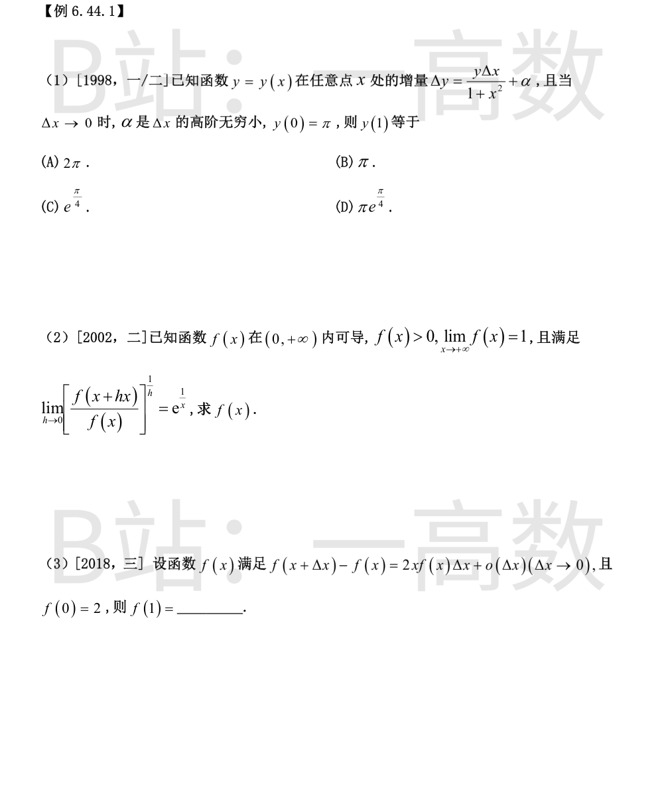
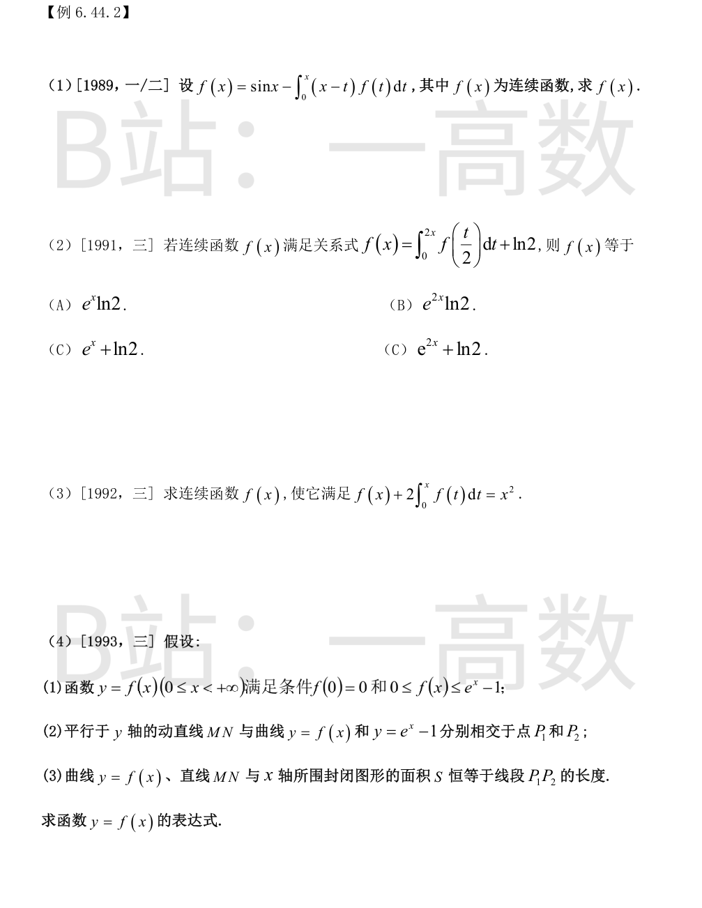
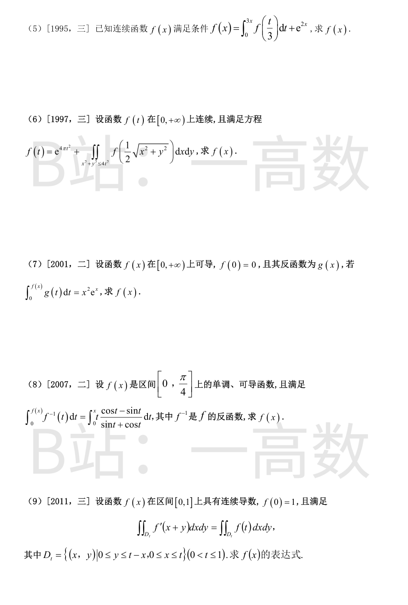
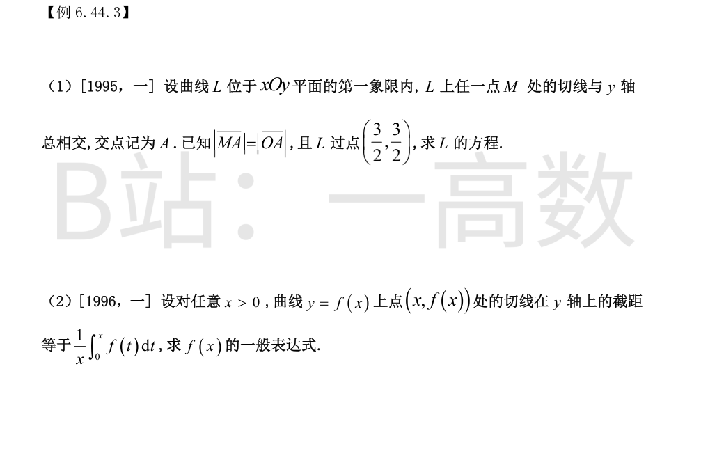
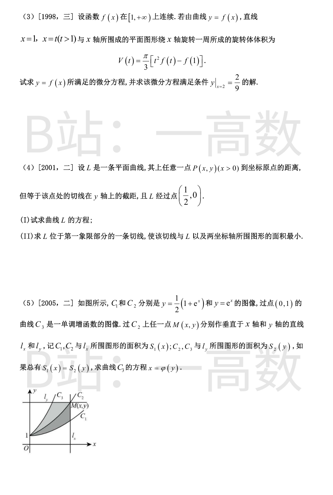
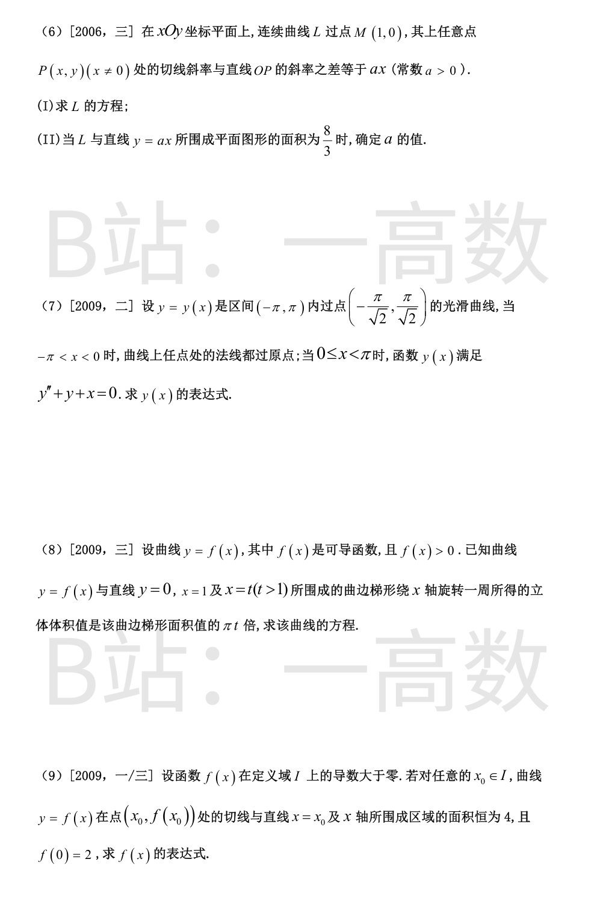

由 \Delta y=\frac{y}{1+x^2}\Delta x+o(\Delta x) 知 \mathrm{d}y=\frac{y}{1+x^2}\mathrm{d}x，即
$$y'=\frac{y}{1+x^2}.$$
分离变量：\frac{\mathrm{d}y}{y}=\frac{\mathrm{d}x}{1+x^2}，积分得 \ln y=\arctan x+C，即 y=Ce^{\arctan x}。
由 y(0)=\pi 得 C=\pi，故 y(1)=\pi e^{\arctan 1}=\pi e^{\frac{\pi}{4}}，选 (D)。
设 L=\lim_{h\to0}\left[\frac{f(x+hx)}{f(x)}\right]^{1/h}，取对数：
$$\ln L=\lim_{h\to0}\frac{\ln f(x+hx)-\ln f(x)}{h}=x[\ln f(x)]'=\frac{xf'(x)}{f(x)}.$$
由题意 \frac{xf'(x)}{f(x)}=\frac{1}{x}，即 \frac{f'}{f}=\frac{1}{x^2}，积分得 \ln f=-\frac{1}{x}+C，f=Ce^{-1/x}。
令 x\to+\infty：1=\lim f=C，故 f(x)=e^{-1/x}。
由 \frac{f(x+\Delta x)-f(x)}{\Delta x}=2xf(x)+\frac{o(\Delta x)}{\Delta x}，令 \Delta x\to0 得 f'(x)=2xf(x)。
分离变量 \frac{\mathrm{d}f}{f}=2x\,\mathrm{d}x，得 f=Ce^{x^2}；由 f(0)=2 得 C=2，故 f(x)=2e^{x^2}，f(1)=2e。


改写 f(x)=\sin x-x\int_0^x f(t)\,\mathrm{d}t+\int_0^x tf(t)\,\mathrm{d}t，则
$$f'(x)=\cos x-\int_0^x f(t)\,\mathrm{d}t,\qquad f''(x)=-\sin x-f(x),$$
且 f(0)=0,\ f'(0)=1。即 f''+f=-\sin x。
齐次通解 C_1\cos x+C_2\sin x；令特解 y_p=\frac{1}{2}x\cos x，验证 y_p''+y_p=-\sin x ✓。
故 f=C_1\cos x+C_2\sin x+\frac{1}{2}x\cos x。由 f(0)=0 得 C_1=0；f'(0)=C_2+\frac{1}{2}=1 得 C_2=\frac{1}{2}。
$$f(x)=\frac{1}{2}\sin x+\frac{1}{2}x\cos x.$$
两边求导（变限积分求导）：f'(x)=2f(x)，且 f(0)=\ln 2。
解得 f=Ce^{2x}，代入 f(0)=\ln 2 得 C=\ln 2，故 f(x)=e^{2x}\ln 2，选 (B)。
代入 x=0 得 f(0)=0；求导得
$$f'(x)+2f(x)=2x.$$
一阶线性方程，通解 f=e^{-2x}\left(\int 2xe^{2x}\,\mathrm{d}x+C\right)=e^{-2x}\left(xe^{2x}-\frac{1}{2}e^{2x}+C\right)=x-\frac{1}{2}+Ce^{-2x}。
由 f(0)=0 得 C=\frac{1}{2}，故 f(x)=x-\frac{1}{2}+\frac{1}{2}e^{-2x}。
S=\int_0^x f(t)\,\mathrm{d}t；|P_1P_2|=e^x-1-f(x)（因 f\le e^x-1）。
由题意 \int_0^x f\,\mathrm{d}t=e^x-1-f(x)，两边求导：
$$f=e^x-f'\ \Longrightarrow\ f'+f=e^x,\quad f(0)=0.$$
解得 f=e^{-x}\left(\frac{1}{2}e^{2x}+C\right)=\frac{1}{2}e^x+Ce^{-x}；由 f(0)=0 得 C=-\frac{1}{2}。
$$f(x)=\frac{e^x-e^{-x}}{2}=\sinh x,$$
显然满足 0\le f(x)\le e^x-1。
【仲裁修正】独立校验发现分歧，经仲裁重解，以本答案为准：A 的 f=e^x-1 使 |P1P2|≡0 而面积 S 不为 0，不满足条件；由 ∫₀ˣf=e^x-1-f 得 f'+f=e^x, f(0)=0 ⇒ f=½(e^x-e^{-x})（solver/B 正确）
令 u=t/3：\int_0^{3x}f(t/3)\,\mathrm{d}t=3\int_0^x f(u)\,\mathrm{d}u，故 f=3\int_0^x f\,\mathrm{d}u+e^{2x}，f(0)=1。
求导：f'-3f=2e^{2x}。通解 f=e^{3x}\left(\int 2e^{2x}e^{-3x}\,\mathrm{d}x+C\right)=e^{3x}\left(-2e^{-x}+C\right)=-2e^{2x}+Ce^{3x}。
由 f(0)=1 得 C=3，故 f(x)=3e^{3x}-2e^{2x}。
极坐标：
$$\iint_{x^2+y^2\le 4t^2} f\!\left(\tfrac{1}{2}\sqrt{x^2+y^2}\right)\mathrm{d}x\mathrm{d}y=\int_0^{2\pi}\!\mathrm{d}\theta\int_0^{2t} f\!\left(\tfrac{r}{2}\right)r\,\mathrm{d}r \overset{r=2s}{=} 2\pi\cdot 4\int_0^t s f(s)\,\mathrm{d}s=8\pi\int_0^t sf(s)\,\mathrm{d}s.$$
故 f(t)=e^{4\pi t^2}+8\pi\int_0^t sf(s)\,\mathrm{d}s，f(0)=1，且
$$f'-8\pi t f=8\pi t\,e^{4\pi t^2}.$$
乘积分因子 e^{-4\pi t^2}：\left(fe^{-4\pi t^2}\right)'=8\pi t，积分得 fe^{-4\pi t^2}=4\pi t^2+C；由 f(0)=1 得 C=1。
$$f(x)=(4\pi x^2+1)e^{4\pi x^2}.$$
两边对 x 求导：g(f(x))\,f'(x)=(2x+x^2)e^x。
由 g 为 f 的反函数，g(f(x))=x，故 xf'(x)=x(x+2)e^x，即 f'(x)=(x+2)e^x。
积分 f=(x+1)e^x+C；由 f(0)=0 得 C=-1，故 f(x)=(x+1)e^x-1。
左边对 x 求导（把 u=f(x) 看作上限、被积函数为 f^{-1}）：
$$\frac{\mathrm{d}}{\mathrm{d}x}\int_0^{f(x)}f^{-1}(t)\,\mathrm{d}t=f^{-1}(f(x))f'(x)=xf'(x).$$
右边求导为 x\frac{\cos x-\sin x}{\sin x+\cos x}。故
$$f'(x)=\frac{\cos x-\sin x}{\cos x+\sin x}=[\ln(\sin x+\cos x)]'.$$
取 x=0：\int_0^{f(0)}f^{-1}(t)\,\mathrm{d}t=0，由 f 单调得 f(0)=0，故 C=0。
$$f(x)=\ln(\sin x+\cos x).$$
【仲裁修正】独立校验发现分歧，经仲裁重解，以本答案为准：对 x f(x)-∫₀ˣf=∫₀ˣ t(cos t-sin t)/(sin t+cos t)dt 求导得 x f'=x(cos x-sin x)/(sin x+cos x)，约去 x 即 f'=(cos x-sin x)/(sin x+cos x)，f(0)=0 ⇒ f=ln(sin x+cos x)；B 微分式右端漏写 x，除以 x 后所得积分在 t=0 处发散，答案错误
令 u=x+y：\iint_{D_t}f'(x+y)\,\mathrm{d}x\mathrm{d}y=\int_0^t\!\mathrm{d}x\int_x^t f'(u)\,\mathrm{d}u=\int_0^t[f(t)-f(x)]\,\mathrm{d}x=tf(t)-\int_0^t f(x)\,\mathrm{d}x。
而 \iint_{D_t}f(t)\,\mathrm{d}x\mathrm{d}y=f(t)\cdot\frac{t^2}{2}。故
$$\left(t-\frac{t^2}{2}\right)f(t)=\int_0^t f(x)\,\mathrm{d}x.$$
求导：(1-t)f+\left(t-\frac{t^2}{2}\right)f'=f，即 \left(t-\frac{t^2}{2}\right)f'=tf，得 \frac{f'}{f}=\frac{2}{2-t}。
积分 \ln f=-2\ln(2-t)+C，f=\frac{C}{(2-t)^2}；由 f(0)=1 得 C=4。
$$f(x)=\frac{4}{(2-x)^2},\quad 0\le x\le 1.$$



设 M(x,y)，切线 Y-y=y'(X-x) 交 y 轴于 A(0,\ y-xy')。
|MA|=\sqrt{x^2+x^2y'^2}，|OA|=|y-xy'|。由 |MA|=|OA|：
$$x^2(1+y'^2)=(y-xy')^2\ \Longrightarrow\ x^2=y^2-2xyy'\ \Longrightarrow\ y'=\frac{y^2-x^2}{2xy}.$$
齐次方程，令 y=ux：u+xu'=\frac{u^2-1}{2u}，得 x\frac{\mathrm{d}u}{\mathrm{d}x}=-\frac{u^2+1}{2u}，
$$\frac{2u\,\mathrm{d}u}{u^2+1}=-\frac{\mathrm{d}x}{x}\ \Longrightarrow\ \ln(u^2+1)=-\ln x+C\ \Longrightarrow\ x^2+y^2=Cx.$$
代入 \left(\frac{3}{2},\frac{3}{2}\right)：C=3。故 L：x^2+y^2=3x（第一象限部分，y=\sqrt{3x-x^2}）。
切线在 y 轴截距为 y-xy'，故 y-xy'=\frac{1}{x}\int_0^x f\,\mathrm{d}t，即 xy-x^2y'=\int_0^x f(t)\,\mathrm{d}t。
两边求导：y+xy'-2xy'-x^2y''=y，即 x^2y''+xy'=0，亦即 (xy')'=0。
令 p=y'：xp=C_1，y'=\frac{C_1}{x}，积分得
$$f(x)=C_1\ln x+C_2.$$
V(t)=\pi\int_1^t f^2(x)\,\mathrm{d}x=\frac{\pi}{3}\left[t^2f(t)-f(1)\right]，即 \int_1^t f^2\,\mathrm{d}x=\frac{1}{3}\left[t^2f(t)-f(1)\right]。
两边对 t 求导：f^2(t)=\frac{1}{3}\left[2tf(t)+t^2f'(t)\right]，得微分方程
$$x^2y'=3y^2-2xy.$$
令 y=ux：u+xu'=3u^2-2u，xu'=3u(u-1)，\frac{\mathrm{d}u}{u(u-1)}=\frac{3\,\mathrm{d}x}{x}，
$$\ln\frac{u-1}{u}=3\ln x+C\ \Longrightarrow\ \frac{y-x}{y}=Cx^3\ \Longrightarrow\ y=\frac{x}{1-Cx^3}.$$
由 y(2)=\frac{2}{9}：\frac{2}{1-8C}=\frac{2}{9}，得 C=-1，故 y=\dfrac{x}{1+x^3}。
(I) 由题意 y-xy'=\sqrt{x^2+y^2}。令 y=ux：
$$x\frac{\mathrm{d}u}{\mathrm{d}x}=-\sqrt{1+u^2}\ \Longrightarrow\ \ln\!\left(u+\sqrt{1+u^2}\right)=-\ln x+C\ \Longrightarrow\ u+\sqrt{1+u^2}=\frac{C}{x}.$$
过 \left(\frac12,0\right) 得 C=\frac12，故 \sqrt{1+u^2}=\frac{1}{2x}-u，平方解出 u=\frac{1}{4x}-x，即
$$L:\ y=\frac{1}{4}-x^2.$$
(II) 设切点 (t,\frac14-t^2)\ (0<t<\frac12)，切线 y=-2tx+\frac14+t^2，两截距 x_A=\frac{\frac14+t^2}{2t},\ y_B=\frac14+t^2，切线在 L 上方。所围面积
$$A(t)=\frac{1}{2}x_Ay_B-\int_0^{1/2}\!\left(\frac14-x^2\right)\mathrm{d}x=\frac{(\frac14+t^2)^2}{4t}-\frac{1}{12}.$$
令 \left[\frac{(\frac14+t^2)^2}{4t}\right]'=\frac{1}{8}+\frac{3}{4}t^2-\frac{1}{64t^2}=0，即 48t^4+8t^2-1=0，得 t^2=\frac{1}{12},\ t=\frac{\sqrt3}{6}。
A_{\min}=\frac{1}{36t}-\frac{1}{12}=\frac{1}{6\sqrt3}-\frac{1}{12}=\frac{2\sqrt3-3}{36}，切线为 y=-\frac{\sqrt3}{3}x+\frac{1}{3}。
C_1、C_2 都过 (0,1)。S_1(x)=\int_0^x\left[e^t-\frac{1+e^t}{2}\right]\mathrm{d}t=\frac{1}{2}\left(e^x-1-x\right)。
C_3 在 C_2 左侧，S_2(y)=\int_1^y[\ln t-\varphi(t)]\,\mathrm{d}t。由 S_1(x)=S_2(y) 且 y=e^x：
$$\frac{1}{2}(e^x-1-x)=\int_1^{e^x}[\ln t-\varphi(t)]\,\mathrm{d}t.$$
两边对 x 求导：\frac{1}{2}(e^x-1)=e^x\left[x-\varphi(e^x)\right]。令 y=e^x：
$$\frac{y-1}{2}=y(\ln y-\varphi(y))\ \Longrightarrow\ \varphi(y)=\ln y-\frac{y-1}{2y}=\ln y-\frac12+\frac{1}{2y}.$$
验证 \varphi(1)=0，即 C_3 过 (0,1) ✓。
(I) y'-\frac{y}{x}=ax，即 \left(\frac{y}{x}\right)'=\frac{xy'-y}{x^2}=\frac{a}{x}，故 \frac{y}{x}=a\ln x+C；由 (1,0) 得 C=0，
$$L:\ y=ax\ln x\ (x>0).$$
(II) y=ax\ln x 与 y=ax 的交点：\ln x=1 得 x=e，另一交点为原点（x\to0^+ 时两者均趋于 0）。在 (0,e) 上 ax\ln x<ax，
$$A=\int_0^e ax(1-\ln x)\,\mathrm{d}x=a\left[\frac{e^2}{2}-\left(\frac{e^2}{2}-\frac{e^2}{4}\right)\right]=\frac{ae^2}{4}=\frac{8}{3},$$
故 a=\dfrac{32}{3e^2}。
【仲裁修正】独立校验发现分歧，经仲裁重解，以本答案为准：切线斜率与 OP 斜率之差为 ax ⇒ y'-y/x=ax, y(1)=0 ⇒ y=a(x²-x)；与 y=ax 交于 x=0,2，面积 ∫₀² a(2x-x²)dx=(4/3)a=8/3 ⇒ a=2（A/B 正确）；solver 的 y=ax ln x、a=32/(3e²) 与原题不符
当 -\pi<x<0：点 (x,y) 处法线斜率为 -\frac{1}{y'}，法线过原点要求 \frac{y-0}{x-0}=-\frac{1}{y'}，即 yy'=-x，(y^2)'=-2x，得 x^2+y^2=C。代入 \left(-\frac{\pi}{\sqrt2},\frac{\pi}{\sqrt2}\right)：C=\pi^2，故
$$y=\sqrt{\pi^2-x^2}.$$
当 0\le x<\pi：y''+y=-x 的通解 y=C_3\cos x+C_4\sin x-x。曲线光滑：在 x=0 处 y,y' 连续，
y(0^-)=\pi,\ y'(0^-)=\lim_{x\to0^-}\frac{-x}{\sqrt{\pi^2-x^2}}=0，故 C_3=\pi,\ C_4-1=0\Rightarrow C_4=1。
$$y=\pi\cos x+\sin x-x.$$
由题意 \pi\int_1^t f^2\,\mathrm{d}x=\pi t\int_1^t f\,\mathrm{d}x，即 \int_1^t f^2\,\mathrm{d}x=t\int_1^t f\,\mathrm{d}x。
求导：f^2=\int_1^t f\,\mathrm{d}x+tf，即 \int_1^x f\,\mathrm{d}t=f^2-xf。取 x=1 得 f(1)^2=f(1)，由 f>0 得 f(1)=1。
再求导：f=2ff'-f-xf'，即 f'=\dfrac{2f}{2f-x}。视 x 为 y 的函数：
$$\frac{\mathrm{d}x}{\mathrm{d}y}=1-\frac{x}{2y},\quad\text{即}\ \frac{\mathrm{d}x}{\mathrm{d}y}+\frac{x}{2y}=1.$$
积分因子 \sqrt y：\left(x\sqrt y\right)'=\sqrt y，x\sqrt y=\frac{2}{3}y^{3/2}+C。由 x=1 时 y=f(1)=1：C=\frac13。
$$x=\frac{2}{3}y+\frac{1}{3\sqrt{y}}.$$
【仲裁修正】独立校验发现分歧，经仲裁重解，以本答案为准：隐式方程三方一致；A 把 √y 的三次方程 2(√y)³-3x√y+1=0 误当二次求根，显式式 y=(3x+√(9x²-8))²/16 不满足原方程（x=2 时左端≈16.3≠6）
切线 Y=f(x_0)+f'(x_0)(X-x_0) 交 x 轴于 X=x_0-\frac{f(x_0)}{f'(x_0)}。围成三角形两直角边为 \frac{f}{f'} 与 f，
$$S=\frac{1}{2}\cdot\frac{f}{f'}\cdot f=\frac{f^2}{2f'}=4\ \Longrightarrow\ f'=\frac{f^2}{8}.$$
即 -\frac{1}{f}=\frac{x}{8}+C，由 f(0)=2 得 C=-\frac{1}{2}，故 \frac{1}{f}=\frac{1}{2}-\frac{x}{8}，
$$f(x)=\frac{8}{4-x}\quad(\text{验证 } f'=\frac{8}{(4-x)^2}>0\ ✓).$$